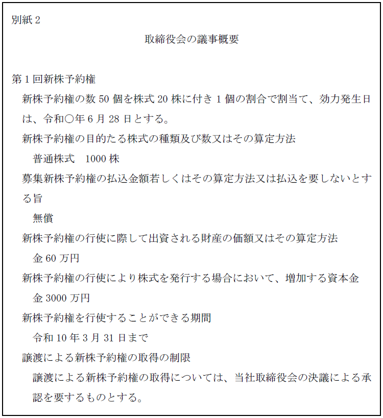
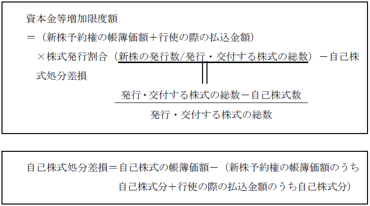
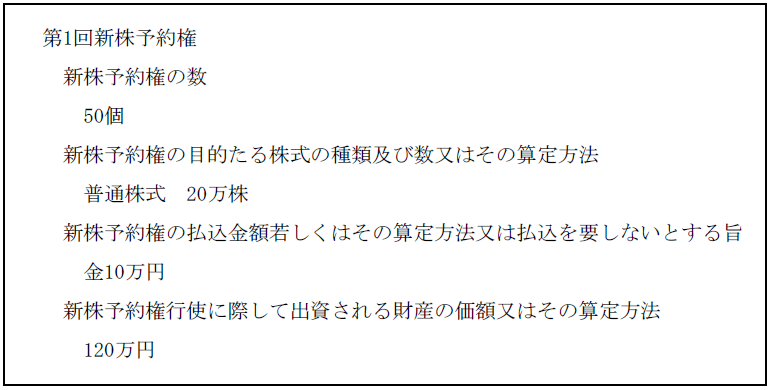

第２編 株式会社
第４章 新株予約権
第３節 新株予約権原簿
新株予約権原簿：新株予約権、新株予約権証券（新株予約権付社債券）、及び（無記名式証券に付された新株予約権以外の新株予約権の場合には）新株予約権者に関する事項を記載・記録するもの
株主名簿や社債原簿に準じて、新株予約権原簿の制度が定められており、株式会社は、新株予約権を発行した日以後遅滞なく、この原簿を作成しなければならない（会社法249条柱書）。
株式会社には、新株予約権原簿を本店（株主名簿管理人がある場合には、その営業所）に備え置く義務が課されている（会社法252条1項）。
株主・債権者（新株予約権者は株式会社の債権者であり、これに含まれる）は、株式会社の営業時間内はいつでも、また親会社社員の場合は権利行使に必要で、裁判所の許可を得た場合に限り、閲覧・謄写の権利が認められている（会社法252条2項、4項）。
新株予約権者に対する通知・催告は、この新株予約権原簿の住所に発すれば足りる（会社法253条1項）。ただし、新株予約権者がこの住所とは別に通知等を受ける場所又は連絡先を株式会社に通知した場合には、その場所又は連絡先にあてて発する（会社法253条1項括弧書）。
第４節 新株予約権の譲渡等
新株予約権は自由に譲渡できるのが原則である。
1. 新株予約権の譲渡制限
新株予約権の発行に際して、その新株予約権の譲渡につき、株式会社の承認を要する旨を定めることができる（会社法236条1項6号）。
なお、この場合の株式会社の承認とは、定款に別段の定めがない限り、以下の決議である（会社法265条1項）。
| 取締役会設置会社 | 取締役会非設置会社 |
| 取締役会の決議 | 株主総会（普通決議） |
もっとも、譲渡による新株予約権の取得について株式会社の承認を要することは、新株予約権の内容として株式会社の登記事項とならない（会社法911条3項12号参照）。また、定款に記載する必要もない。
新株予約権者及び新株予約権取得者は株式会社に対して承認請求をすることができるが（会社法262条、263条）、買取請求等は認められていない。これは、新株予約権は株式になる前段階の権利であるので、払込済の新株予約権そのものの対価の回収の要請はさほど高くないからである。
2. 新株予約権付社債の譲渡制限
新株予約権付社債：新株予約権と社債とを同時に同一人に割り当てる形で発行するもので、両者を分離して譲渡することができないもの（会社法2条22号）
新株予約権付社債に付された新株予約権のみを譲渡することはできない（会社法254条2項本文）。また、新株予約権付社債についての社債のみを譲渡することもできない（会社法254条3項本文）。
ただし、いずれかが消滅した場合に、残った部分のみを譲渡することは認められる（会社法254条2項ただし書、3項ただし書）。
ex. 新株予約権の行使期間が満了した場合は、社債のみを譲渡することができる。
1. 新株予約権証券
新株予約権にも、株券のように「新株予約権証券（新株予約権を表章する有価証券）を発行する定めのある新株予約権」と「新株予約権証券を発行する定めのない新株予約権」がある。
新株予約権が、当該新株予約権に係る新株予約権証券を発行することを内容とする（会社法236条1項10号）場合には、これを発行した日後遅滞なく、新株予約権証券を発行しなければならない（会社法288条1項）。
なお、新株予約権証券は、さらに「記名新株予約権」「無記名新株予約権」に分かれる。
2. 移転要件・第三者対抗要件・株式会社への対抗要件
| 新株予約権証券発行会社 | 新株予約権証券不発行会社 | |
| 移転要件 | 新株予約権証券の交付 | 意思表示 |
| 第三者対抗要件 | 新株予約権証券の所持 | 新株予約権原簿の書換 |
| 株式会社への対抗要件 | 【記名新株予約権】 新株予約権原簿の書換 【無記名新株予約権】 新株予約権証券の所持 |
新株予約権原簿の書換 |
記名新株予約権・無記名新株予約権
：新株予約権証券が発行されている新株予約権で、新株予約権原簿に新株予約権者の氏名又は名称及び住所が記載又は記録されていないのが無記名新株予約権、記載又は記録されているのが記名新株予約権である。
第５節 新株予約権買取請求
次の場合には、新株予約権者は、株式会社に対し、自己の有する新株予約権を公正な価格で買い取ることを請求することができる。
| 請求できる場合 |
| ①発行する全部の株式の内容として譲渡制限の定め（会社法107条1項1号）を設ける定款の変更をする場合（会社法118条1項1号） |
| ②ある種類の株式の内容として譲渡制限の定め（会社法108条1項4号）、又は、株主総会決議によってその全部を取得する旨の定め（会社法108条1項7号）を設ける定款の変更をする場合（会社法118条1項2号） |
| ③組織変更をする場合（会社法777条1項） |
| ④吸収合併、吸収分割、株式交換をする場合（会社法787条1項） |
| ⑤新設合併、新設分割、株式移転をする場合（会社法808条1項） |
※反対株主の株式買取請求権が認められた以下の場合は、新株予約権買取請求は認められない。
・種類株式の内容として、種類株主総会の決議を要しない旨の定め（会社法322条2項）がある種類株式発行会社が、会社法116条1項3号イからヘに掲げる行為（会社法322条1項2号～6号及び単元株式数についての定款の変更）をする場合において、ある種類株式を有する種類株主に損害を及ぼすおそれがある場合（会社法116条1項3号）
新株予約権者には、そもそも議決権がないからである。
・株式の併合により1株に満たない端数が生じる場合（会社法182条の4）
株式の端数の問題だからである。
・事業譲渡等をする場合（会社法469条、470条）
新株予約権者は、債権者として個別に債務引受けがされるからである。
第６節 新株予約権無償割当て
株式会社は、持株比率に応じ株主に対して無償でその株式会社の新株予約権の割当てをすることができる（会社法277条、278条2項）。これは、募集新株予約権の発行の方法によらない新株予約権の発行方法である。
新株予約権割当事項は、定款に別段の定めがある場合を除き、以下の機関が決議しなければならない（会社法278条3項）。
| 取締役会設置会社 | 取締役会非設置会社 |
| 取締役会の決議 | 株主総会（普通決議） |
株式会社が自己株式を保有していても、株式会社自身は割当てを受けることはできない（会社法278条2項）。
※新株予約権無償割当てにおいて、新たに発行する新株予約権と自己新株予約権とを混在させて割り当てることはできない。混在させなければ、自己新株予約権を割り当てることは可能である。
新株予約権の内容は、募集事項又は無償割当てに関する事項の決議の都度定められるので（会社法238条1項・2項、278条1項・3項）、新たに発行する新株予約権と既に発行されている自己新株予約権は別個の種類と評価されるからである。
自己新株予約権のみを交付することによって新株予約権の無償割当てをした場合には、登記事項に変更は生じないため、新株予約権の無償割当てによる変更の登記は不要である。
※ポイズン・ピル
実務においては、既存株主に新株予約権を無償で割り当て、一定の者がその株式会社の株式を一定比率以上取得した場合には、その者を除く株主は新株予約権を行使できるものとすることがある。この場合に行使価格を低くしておくことにより、敵対的企業買収に対する防衛策となる。これが、ポイズン・ピルと呼ばれるものである。
【申請例49 新株予約権無償割当て】
事例： 令和○年6月10日、別紙1の登記がなされた公開会社である株式会社Ａ商事において、取締役会で、別紙2の内容の新株予約権を株主に無償で割り当てる旨の決議がなされた。各株主に対しては、適法に通知がなされている。
別紙1
登記事項証明書の内容の抜粋
| 発行可能株式総数 | 4000株 |
| 発行済株式の総数並びに種類及び数 | 発行済株式の総数 1000株 |

| 1. 登記の事由 1. 登記すべき事項 | 新株予約権無償割当て 令和○年6月28日発行 第1回新株予約権 新株予約権の数 50個 新株予約権の目的たる株式の種類及び数又はその算定方法 普通株式 1000株 募集新株予約権の払込金額若しくはその算定方法又は払込を要しないとする旨 無償 新株予約権の行使に際して出資される財産の価額又はその算定方法 60万円 新株予約権を行使することができる期間 令和10年3月31日まで | 1. 登録免許税 1. 添付書面 | 金9万円 取締役会議事録 1通 委任状 1通 |
|---|
1. 登記の事由
「新株予約権無償割当て」と記載する。
2. 登記すべき事項
新株予約権の数・新株予約権の目的たる株式の種類及び数又はその算定方法・募集新株予約権の払込金額若しくはその算定方法又は払込を要しないとする旨・新株予約権の行使に際して出資される財産の価額又はその算定方法・新株予約権を行使することができる期間等を記載する。
年月日は、新株予約権無償割当てを決議した際に定めた効力発生日を記載する。
3. 添付書面
①株主総会議事録（普通決議の要件を満たすもの）又は取締役会議事録
新株予約権の無償割当てを決議した株主総会又は取締役会の議事録
②種類株主総会議事録
種類株式発行会社において、新株予約権無償割当てを行うことが、ある種類の株式の種類株主に損害を及ぼすおそれがあるときは、当該種類の株式の種類株主を構成員とする種類株主総会の議事録を添付する（特別決議の要件を満たすもの。会社法322条1項6号）。
③株主の氏名又は名称、住所及び議決権数等を証する書面（株主リスト）（商登規61条3項）
株主総会又は種類株主総会で決議したとき。具体的には、代表者作成の証明書がこれに当たる。
④委任状
4. 登録免許税
申請件数1件につき、9万円（登免法別表1.24(1)ヌ）。
第７節 新株予約権の行使
1. 総説
新株予約権を行使する者は、新株予約権証券が発行されている場合には、新株予約権証券を株式会社に提出し（会社法280条2項）、かつ新株予約権の行使に際して払込みをなすべき金額の払込み・財産の給付をしなければならない（会社法281条1項、2項）。
新株予約権証券が発行されていない場合には、その行使に係る新株予約権の内容・数、新株予約権を行使する日を明らかにして行使しなければならない（会社法280条1項）。
金銭による払込みが必要な場合には、新株予約権者は、新株予約権を行使する際に払い込むべき額の全額を、株式会社の定めた銀行等の払込取扱場所に払い込まなければならず（会社法281条1項）、金銭以外の財産を出資の目的とする場合には、当該財産を給付しなければならない（会社法281条2項前段）。
2. 相殺の可否
新株予約権者は、新株予約権の行使の際に払込み又は給付をする債務と株式会社に対する債権とを相殺することはできない（会社法281条3項）。
新株予約権の行使においては、払い込んだ金額は直接資本金及び資本準備金となり、出資の側面が強いため、資本充実の要請が働くからである。
3. 行使の効果
新株予約権を行使した者は、新株予約権を行使した日に株主となる（会社法282条）。
株式会社は自己新株予約権を行使することができない（会社法280条6項）。自分で自分に出資することは資本の空洞化を招くし（実質的な払込みはないので、出資額が新たな会社資金とはならない）、自己株式の取得とは異なり、これを認める必要性も乏しいからである。
※自己新株予約権の処分
自己新株予約権は、売買等により通常の会社財産として処分することができる。株式と異なり、新株予約権は単なる債権だからである。
新株予約権の内容として、金銭以外の財産（現物出資財産）を当該新株予約権の行使に際してする出資の目的とする場合には、原則として検査役の調査を要すること、及び、一定の場合には検査役の調査を要しないことは、募集株式の発行等の場合と同じである（会社法284条）。
※検査役の調査が必要となることは？
行使された新株予約権の新株予約権者が交付を受ける株式の総数が、直前の発行済株式総数の10分の1以下である場合には、検査役の調査は要しない（会社法284条9項1号）。しかし、この要件は新株予約権1個ごとに判断するものとされているため、実際に新株予約権の行使に際して検査役の調査を要することはほとんどないのが現状である。
1. 登記期間
新株予約権の行使による株式の発行の場合、順次新株予約権の行使がなされるということがあり得、行使があるたびに登記申請を要するとするのは煩雑である。そこで、この場合には、毎月末日現在までの変更分を一括して登記申請することが認められており、その場合の登記期間も、当該末日から2週間以内でよいとされている（会社法915条3項1号）。
2. 申請書の内容
【申請例50 新株予約権 一部行使】
事例： 令和○年6月28日、別紙1の登記のなされた株式会社に対して、Ａから第1回新株予約権の一部25個を行使する旨の書面が提出され、同日、行使に係る新株予約権について出資される財産の価額の全額が適法に払い込まれた。なお、第1回新株予約権の行使により増加する資本金の額は、払込金額の全額とすることが、第1回新株予約権の募集事項に係る株主総会において決定されている。また、当該株式会社は、自己株式を保有していない。
別紙1
登記事項証明書の内容の抜粋
| 発行可能株式総数 | 10000株 |
| 発行済株式の総数並びに種類及び数 | 発行済株式の総数 2500株 |
| 資本金の額 | 金1億円 |
| 株式の譲渡制限に関する規定 | 当会社の株式は、取締役会の承認がなければ譲渡することができない。 |
| 新株予約権 | 第1回新株予約権 新株予約権の数 50個 新株予約権の目的たる株式の種類及び数又はその算定方法 普通株式 1000株 募集新株予約権の払込金額若しくはその算定方法又は払込を要しないとする旨 無償 新株予約権の行使に際して出資される財産の価額又はその算定方法 60万円 新株予約権を行使することができる期間 令和12年5月31日まで |
| 1. 登記の事由 1. 登記すべき事項 | 新株予約権の行使 令和○年6月28日変更 発行済株式の総数 3000株 資本金の額 金1億1500万円 同日変更 第1回新株予約権 新株予約権の数 25個 前記新株予約権の目的たる株式の種類及び数又はその算定方法 普通株式 500株 | 1. 課税標準金額 1. 登録免許税 1. 添付書面 | 金1500万円 金10万5000円 新株予約権の行使があったことを証する書面 1通 払込みがあったことを証する書面 1通 資本金の額が会社法及び会社計算規則の規定に従って計上されたことを証する書面 1通 委任状 1通 |
|---|
(1) 登記の事由
「新株予約権の行使」と記載する。
(2) 登記すべき事項
「年月日変更
発行済株式の総数 2500株
資本金の額 金1億円
同日変更
第1回新株予約権
新株予約権の数 25個
新株予約権の目的たる株式の種類及び数又はその算定方法
普通株式 500株」等と記載する。
年月日は、新株予約権の行使のあった日又は新株予約権の行使のあった月の末日を記載する。
※自己株式のみを交付するときは、発行済株式の総数にも資本金の額にも変更はない。ただし、（一部行使であっても、全部行使であっても）自己株式のみを交付するときも、新株予約権が行使されれば、新株予約権の数や新株予約権の目的たる株式の数等に変更が生ずるから、登記事項は発生する。
(3) 添付書面
ⅰ 新株予約権の行使があったことを証する書面
ⅱ 払込みがあったことを証する書面
金銭出資の場合に必要となる。
ⅲ 検査役の調査報告書及びその附属書類、又は、その他所定の書面
現物出資がある場合に必要となる。
ⅳ 資本金の額が会社法及び会社計算規則の規定に従って計上されたことを証する書面
※ 資本金として計上しない額（資本準備金として計上する額）を定めた場合には、当該新株予約権の決定機関の議事録等（株主総会議事録〔特別決議の要件を満たすもの〕、取締役の過半数の一致を証する書面、取締役会議事録、種類株主総会議事録〔特別決議の要件を満たすもの〕
新株予約権の募集事項を決定したことを証する書面は、添付書面とはされていないので、資本金として計上しない額を定めた場合にはそれを証するために、募集事項を決定した際の議事録等（募集事項の決定につき定款の定めがある場合には定款を含む）を添付しなければならない。
ⅴ 委任状
(4) 登録免許税
増加した資本金の額の1000分の7（これにより計算した額が3万円に満たないときは、申請件数1件につき、3万円）（登免法別表1.24(1)ニ）。
自己株式のみを交付した場合には、3万円（登免法別表1.24(1)ツ）。
【申請例51 新株予約権 全部行使】
事例： 令和○年6月28日、別紙1の登記のなされた株式会社に対して、Ａから第1回新株予約権の全部を行使する旨の書面が提出され、同日、行使に係る新株予約権について出資される財産の価額の全額が適法に払い込まれた。なお、第1回新株予約権の行使により増加する資本金の額は、資本金等増加限度額の2分の1の金額とすることが、第1回新株予約権の募集事項に係る株主総会及び普通株式の種類株主総会において決定されている。また、当該株式会社は、自己株式を保有していない。
別紙1
登記事項証明書の内容の抜粋
| 発行可能株式総数 | 10000株 |
| 発行済株式の総数並びに種類及び数 | 発行済株式の総数 2500株 各種の株式の数 普通株式 2000株 甲種類株式 500株 |
| 資本金の額 | 金1億円 |
| 株式の譲渡制限に関する規定 | 当会社の株式は、取締役会の承認がなければ譲渡することができない。 |
| 発行可能種類株式総数及び発行する各種類の株式の内容 | 普通株式 7000株 甲種類株式 3000株 1. 剰余金の配当 剰余金については、甲種類株式を有する株主に対し、普通株式を有する株主に先立ち、1株につき300円の剰余金を支払う。 |
| 新株予約権 | 第1回新株予約権 新株予約権の数 50個 新株予約権の目的たる株式の種類及び数又はその算定方法 普通株式 1000株 募集新株予約権の払込金額若しくはその算定方法又は払込を要しないとする旨 無償 新株予約権の行使に際して出資される財産の価額又はその算定方法 11万円 新株予約権を行使することができる期間 令和12年5月31日まで |
| 1. 登記の事由 1. 登記すべき事項 1. 課税標準金額 1. 登録免許税 1. 添付書面 | 新株予約権の全部行使 令和○年6月28日変更 発行済株式の総数 3500株 各種の株式の数 普通株式 3000株 甲種類株式 500株 資本金の額 金1億275万円 同日第1回新株予約権全部行使 金275万円 金3万円 株主総会議事録 1通 普通株式の種類株主総会議事録 1通 新株予約権の行使があったことを証する書面 1通 払込みがあったことを証する書面 1通 資本金の額が会社法及び会社計算規則の規定に従って計上されたことを証する書面 1通 委任状 1通 |
|---|
| 発行済株式の総数並びに種類及び数 | 発行済株式の総数 2500株 各種の株式の数 普通株式 2000株 甲種類株式 500株 |
|
| 発行済株式の総数 3500株 各種の株式の数 普通株式 3000株 甲種類株式 500株 |
令和○年6月28日変更 | |
| 令和○年7月5日登記 | ||
| 資本金の額 | 金1億円 | |
| 金1億275万円 | 令和○年6月28日変更 | |
| 令和○年7月5日登記 | ||
| 新株予約権 | 第1回新株予約権 新株予約権の数 50個 新株予約権の目的たる株式の種類及び数又はその算定方法 普通株式 1000株 募集新株予約権の払込金額若しくはその算定方法又は払込を要しないとする旨 無償 新株予約権の行使に際して出資される財産の価額又はその算定方法 11万円 新株予約権を行使することができる期間 令和12年5月31日まで |
|
| 令和○年6月28日新株予約権全部行使 令和○年7月5日登記 |
||
(1) 登記の事由
「新株予約権の全部行使」と記載する。
(2) 登記すべき事項
「年月日変更
発行済株式の総数 3000株
資本金の額 金1億5000万円
同日第1回新株予約権全部行使」
等と記載する。
年月日は、新株予約権の行使のあった日又は新株予約権の行使のあった月の末日を記載する。
(3) 添付書面
一部行使の場合と同様である。
(4) 登録免許税
増加した資本金の額の1000分の7（これにより計算した額が3万円に満たないときは、申請件数1件につき、3万円）（登免法別表1.24(1)ニ）。
自己株式のみを交付した場合には、3万円（登免法別表1.24(1)ツ）。
3. 増加する資本金の額の計算方法
新株予約権の行使があった場合も、株式の発行の一場面であるから、募集株式の発行による資本金の額の増加の場合と基本的に同様に考えればよい（会社計算規17条1項）。

ただし、新株予約権の場合、新株予約権を有償で発行したときは、新株予約権行使の際に出資する財産の価額に加え、新株予約権の帳簿価額も、資本金等増加限度額の基礎にしなければならない（会社計算規17条）。ここにいう帳簿価額とは、原則として、新株予約権と引き換えにされた金銭等の払込み・給付額（又は相殺の額）、すなわち、発行の対価額であるが、これも新株予約権行使による入金分として振り替えることとしたのである。なお、「新株予約権の帳簿価額」と「発行の対価額」は、一致しないこともある。
ex. 新株予約権の発行を受けた取締役が、職務遂行を評価され、「新株予約権の帳簿価額」が「発行の対価額」を超えることがある。
また、自己株式処分差損を計算する際にも、新株予約権行使の際に出資する財産の価額及び、新株予約権の帳簿価額の合計額と、自己株式の帳簿価額を比較して差損が生じるか否かを判断しなければならない。

（具体例）
以下のとおり新株予約権の登記（一部抜粋）がされている場合において、当該新株予約権のすべてを行使するときの増加する資本金の額の計算について考える。なお、発行する株式の半数を自己株式（1株当たりの帳簿価額は350円）とし、増加する資本金の額は、資本金等増加限度額の2分の1の金額とする。

まず、「新株予約権の帳簿価額＋行使の際の払込金額」を考える。新株予約権1個当たりの帳簿価額は10万円・行使の際の払込金額は1個当たり120万円であり、行使された新株予約権の数は50個であるため、以下の額が上記の「新株予約権の帳簿価額＋行使の際の払込金額」となる。
10万円×50個＋120万円×50個＝「6500万円」
株式発行割合は「1/2」である。
次に「自己株式処分差損」について考える。自己株式1株当たりの帳簿価額は350円であり、発行する株式の半数が自己株式であるから、「自己株式処分差損」は以下のとおりとなる。
350円×10万株－（500万円×1/2＋6000万円×1/2）＝「250万円」
以上より、「資本金等増加限度額」は、以下のとおりとなる。
6500万円×1/2－250万円＝「3000万円」
増加する資本金の額は資本金等増加限度額の2分の1であるから、「増加する資本金の額」は、以下のとおりとなる。
3000万円×1/2＝「1500万円」
第８節 新株予約権の消滅
1. 実体法上の手続
株式会社は、自己新株予約権を消却することができる（会社法276条1項）。その決定は、以下の機関が行う（会社法276条2項）。
・（取締役会非設置会社）取締役の決定（取締役の過半数の一致）
・（取締役会設置会社）取締役会の決議
2. 申請書の内容
【申請例52 新株予約権 消却（全部）】
事例： 令和○年6月28日、取締役会において、自己新株予約権である第1回新株予約権50個全部を、同日付けで消却することを決議し、失効手続を完了した。
| 1. 登記の事由 1. 登記すべき事項 | 新株予約権の消却 令和○年6月28日第1回新株予約権全部消却 | 1. 登録免許税 1. 添付書面 | 金3万円 取締役会議事録 1通 委任状 1通 |
|---|
①登記の事由
「新株予約権の消却」と記載する。
②登記すべき事項
【一部消却の場合】
「年月日変更
第1回新株予約権
新株予約権の数 25個
新株予約権の目的たる株式の種類及び数又はその算定方法
普通株式 500株」
等と記載する。
※この年月日は、自己新株予約権の失効の手続を終えた日と解されている。
【全部消却の場合】
「年月日第1回新株予約権全部消却」等と記載する。
※この年月日は、自己新株予約権の失効の手続を終えた日と解されている。
③添付書面
ⅰ 取締役の過半数の一致を証する書面又は取締役会議事録
自己新株予約権の消却を決定した取締役の過半数の一致を証する書面又は取締役会の議事録
ⅱ 委任状
④登録免許税
申請件数1件につき、3万円（登免法別表1.24(1)ツ）。
新株予約権者がその有する新株予約権を行使することができなくなった場合には、その新株予約権は消滅する（会社法287条）。新株予約権行使の可能性が100％なくなったのに、消却の手続をしない限り新株予約権が存続するのは不自然なので、規定がおかれている。
ex. インセンティブ報酬として取締役に付与された新株予約権に、一定期間在任しなければその権利を行使することができないとの条件が付いている場合に、当該取締役が所定の在任期間経過前に退任したとき。
1. 意義
新株予約権は、行使期間の満了により消滅する。
2. 申請書の内容
【申請例53 新株予約権 行使期間満了】
事例： 別紙1の登記がされている株式会社において、新株予約権のすべてが行使期間内に行使されなかった。
別紙1
登記事項証明書の内容の抜粋
| 新株予約権 | 第1回新株予約権 新株予約権の数 50個 新株予約権の目的たる株式の種類及び数又はその算定方法 普通株式 1000株 募集新株予約権の払込金額若しくはその算定方法又は払込を要しないとする旨 無償 新株予約権の行使に際して出資される財産の価額又はその算定方法 60万円 新株予約権を行使することができる期間 令和○年6月27日まで |
| 1. 登記の事由 1. 登記すべき事項 | 新株予約権の行使期間満了 令和○年6月28日新株予約権行使期間満了 | 1. 登録免許税 1. 添付書面 | 金3万円 委任状 1通 |
|---|
(1) 登記の事由
「新株予約権の行使期間満了」と記載する。
(2) 登記すべき事項
「年月日第1回新株予約権の行使期間満了」等と記載する。
(3) 添付書面
・委任状
代理人によって申請する場合の委任状を除いて、添付する書面はない。
新株予約権の放棄による変更登記の申請の場合も同様である。
(4) 登録免許税
申請件数1件につき、3万円（登免法別表1.24(1)ツ）。
第９節 種類株式等の取得と引換えにする新株予約権の発行
1. 取得請求権付株式の取得と引換えにする新株予約権の発行
取得対価が新株予約権である取得請求権付株式の株主が当該取得請求権付株式を取得することを請求すると、その日に、株式会社は当該取得請求権付株式を取得し（会社法167条1項）、それと引換えに、取得請求権付株式の株主であった者は新株予約権者となる（会社法167条2項2号）。
2. 取得条項付株式の取得と引換えにする新株予約権の発行
取得対価が新株予約権である取得条項付株式について、取得事由が生じた場合には、会社は取得条項付株式を取得し（会社法170条1項）、それと引換えに、取得条項付株式の株主であった者は新株予約権者となる（会社法170条2項2号）。
3. 全部取得条項付種類株式の取得と引換えにする新株予約権の発行
株式会社が株主総会の特別決議によって全部取得条項付種類株式の全部を取得する場合に、取得対価が新株予約権であるときは、株式会社は全部取得条項付種類株式を取得し（会社法173条1項）、それと引換えに、全部取得条項付種類株式の株主であった者は新株予約権者となる（会社法173条2項3号）。
上記１1.から3.はすべて新株予約権の「発行」の場面であるため、資本金は増加しない。
上記１1.から3.の場合には、分配可能額による制限がある。新株予約権の帳簿価額が以下のそれぞれの日における分配可能額を超えているときは、株主は、取得請求権付株式の取得を請求することができず、会社は、取得条項付株式・全部取得条項付種類株式を取得することができない。
1.→取得の請求の日（会社法166条1項ただし書）
2.→取得事由が生じた日（会社法170条5項）
3.→取得日（会社法461条1項4号）
したがって、これらの登記を申請する際には、分配可能額が存在することを証する書面（商登規61条10項）が添付書面となる。具体的には、代表者の作成に係る証明書等がこれに該当する。